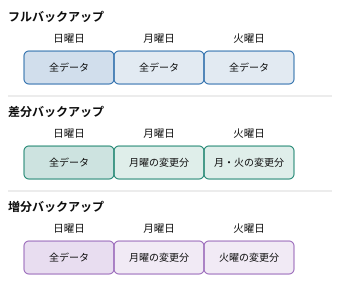

「バックアップ」とは
バックアップとは、コンピュータの故障、データの誤削除、マルウェアへの感染などによってデータが失われたり、利用できなくなったりした場合に備えて、元のデータとは別に、復旧に使用できるデータのコピーを保存しておくことです。
例えば、パソコンに保存していた写真や文書が、故障によって読み出せなくなった場合でも、外付けSSDやクラウドストレージにバックアップを保存していれば、そのデータを復元できる可能性があります。
バックアップは、情報セキュリティの3要素である「機密性」「完全性」「可用性」のうち、特に可用性を高めるための対策です。可用性とは、必要なときに情報やシステムを利用できることであり、バックアップによって障害発生後もデータを復旧し、利用を再開しやすくなります。
ただし、バックアップは事故や攻撃そのものを防ぐものではありません。データが失われたり、利用できなくなったりした場合に、その影響を小さくするための対策です。
バックアップの保存場所と管理
バックアップは、元のデータと同時に失われないように保存することが重要です。
例えば、パソコンの内蔵SSDの別フォルダにデータをコピーしただけでは、SSDそのものが故障した場合に両方のデータを失ってしまいます。そのため、外付けSSD、USBメモリ、クラウドストレージなど、元のデータとは異なる保存先を利用することが望ましいです。
複数の場所に保存することで、機器の故障だけでなく、火災や水害などによって同じ場所にある機器がまとめて被害を受けるリスクも減らせます。
また、バックアップ先へのアクセス権も適切に管理する必要があります。すべての利用者に書込み権限を与えると、誤操作や不正アクセスによってバックアップが削除・改ざんされる危険が高まります。
ランサムウェアへの対策
ランサムウェアとは、データを暗号化するなどして利用できなくし、復旧と引き換えに金銭を要求するマルウェアです。
ランサムウェアに感染した場合、パソコン内のデータだけでなく、そのパソコンから書込み可能な共有フォルダや、常時接続されているバックアップ先のデータまで暗号化されることがあります。
このような被害を防ぐためには、次の対策が有効です。
- 切り離して保管する：バックアップ取得後に外付け記憶装置を取り外すなどして、感染した端末からアクセスできない状態にする。
- 変更できない状態で保存する：一定期間、データの変更や削除ができない仕組みを利用する。
- 複数世代を保存する：最新のバックアップだけでなく、過去の異なる時点のバックアップも残す。
- 復元テストを実施する：バックアップから実際にデータを復元できるか、定期的に確認する。
特に複数世代の保存は重要です。例えば、月曜日に感染したことに気付かず、水曜日に暗号化されたデータをバックアップしてしまっても、感染前の日曜日のバックアップが残っていれば、そこから復旧できる可能性があります。
ランサムウェア感染後の復旧では、感染端末を隔離して被害範囲を調査し、マルウェアなどの侵害要因を取り除いた安全な環境を用意します。そのうえで、正常であることを確認したバックアップからデータを復元します。感染原因を除去しないまま復元すると、再び被害を受ける危険があります。
バックアップの種類
バックアップには、保存するデータの範囲によって、主に次の3種類があります。
| 種類 | 保存するデータ | 特徴 |
|---|
| フルバックアップ | すべての対象データ | 復元しやすいが、保存するデータ量が多い |
| 差分バックアップ | 直近のフルバックアップ以降の変更分 | 復元時はフルと最新の差分を使用する |
| 増分バックアップ | 直前のバックアップ以降の変更分 | 1回の保存量を抑えやすいが、復元時に複数のバックアップが必要になる |

例えば、日曜日にフルバックアップを取得し、月曜日と火曜日にデータを変更したとします。
フルバックアップは、毎回すべての対象データを保存する方法です。バックアップに必要な時間や保存容量が大きくなりやすいですが、復元時には基本的に対象時点のフルバックアップを使えばよいです。
差分バックアップは、最後のフルバックアップ以降に変更されたデータを保存する方法です。月曜日には月曜日の変更分、火曜日には月曜日と火曜日の変更分を保存します。したがって、火曜日の状態へ復元するときは、日曜日のフルバックアップと火曜日の差分バックアップを使用します。
増分バックアップは、直前のバックアップ以降に変更されたデータだけを保存する方法です。月曜日には月曜日の変更分、火曜日には火曜日の変更分を保存します。したがって、火曜日の状態へ復元するときは、日曜日のフルバックアップ、月曜日の増分バックアップ、火曜日の増分バックアップを順番に使用します。
増分バックアップでは、更新されたことを示す管理情報をバックアップ取得後にリセットする方式もあります。そのため、次回は前回以降の変更分だけを取得できます。なお、具体的な変更の検出方法はバックアップソフトウェアによって異なります。
一般に、増分バックアップは差分バックアップよりも1回当たりの保存量を抑えやすい一方、復元に必要なバックアップの数が多くなりやすいです。
バックアップの頻度
バックアップは、どの程度の間隔で取得するかによって、障害発生時に失われる可能性のあるデータ量が変わります。
例えば、1週間に1回しかバックアップしない場合、障害が発生する時期によっては約1週間分の更新データを失う可能性があります。一方、毎日バックアップを取得していれば、通常は失われる更新を約1日分以内に抑えられます。
このように、バックアップの間隔を短くするほど、失われる可能性のある更新データを少なくできます。
ただし、頻繁にフルバックアップを取得すると、保存容量や処理時間などの負担が大きくなります。そのため、週1回のフルバックアップと毎日の差分・増分バックアップを組み合わせるなど、効率的な運用が行われます。
他のセキュリティ対策との組合せ
バックアップは、情報セキュリティ対策の一つであり、それだけで安全性を確保できるわけではありません。
例えば、OSやソフトウェアの脆弱性が公表された場合は、対象のバージョンや影響範囲を確認し、修正プログラムを適用する必要があります。ただし、更新によってシステムに不具合が生じる可能性もあるため、事前にバックアップなどの復旧手段を確保し、可能な範囲で動作を検証してから速やかに適用します。
また、マルウェア対策では、OSの更新、不審なメールやリンクへの注意、ウイルス対策ソフトの利用、アクセス権の制限、バックアップなどを組み合わせることが有効です。このように、異なる役割を持つ対策を重ねる考え方を多層防御といいます。
特に、バックアップは感染や不正アクセスを直接防ぐものではなく、被害が発生した後の復旧を支える役割を持ちます。